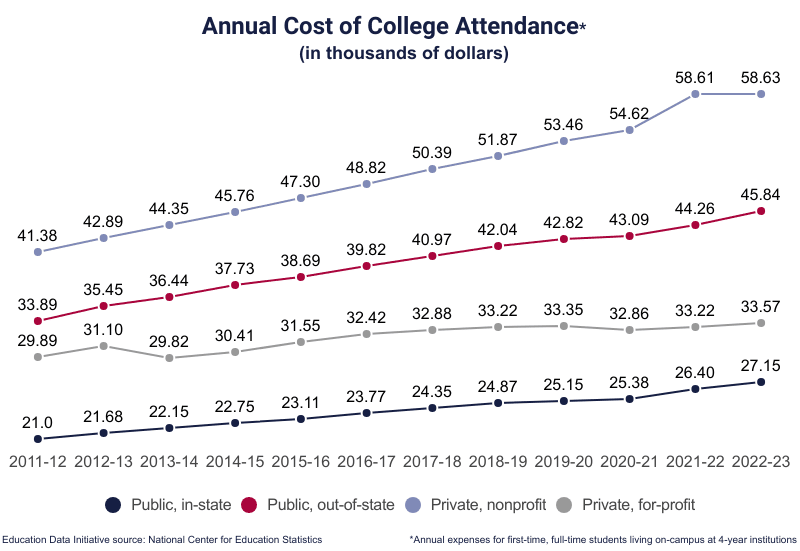
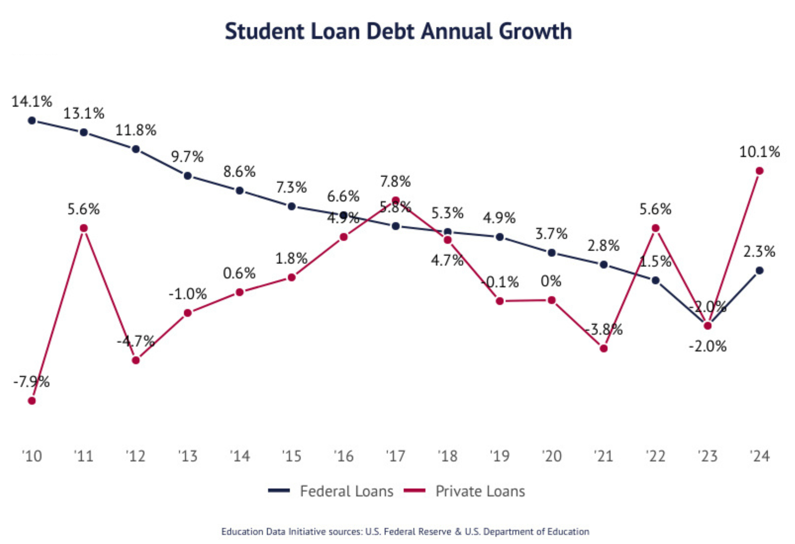
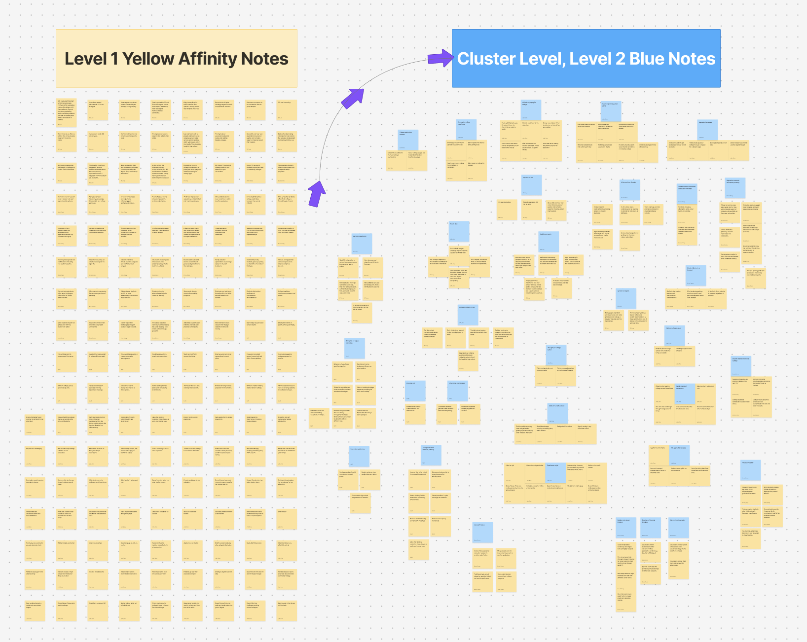
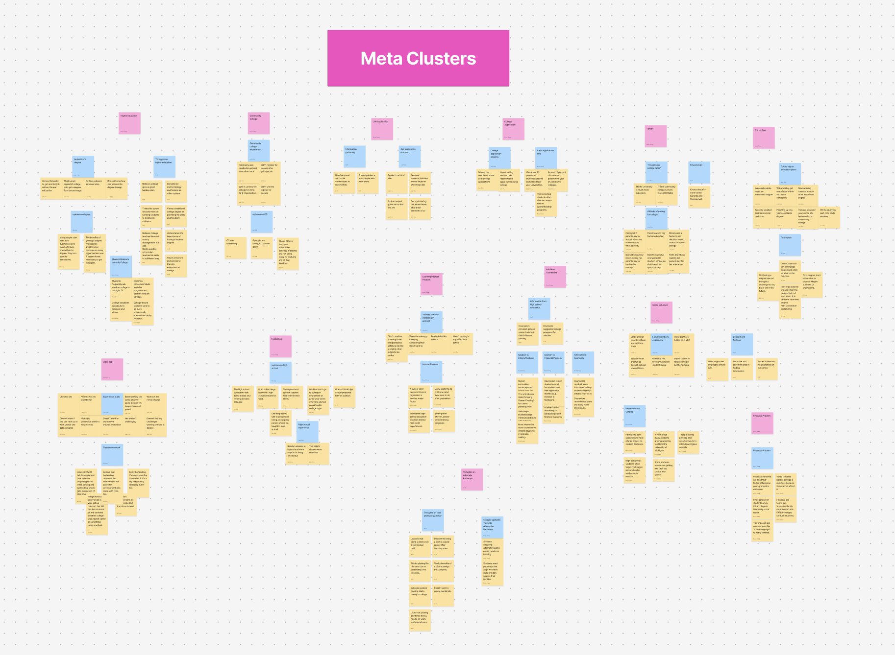
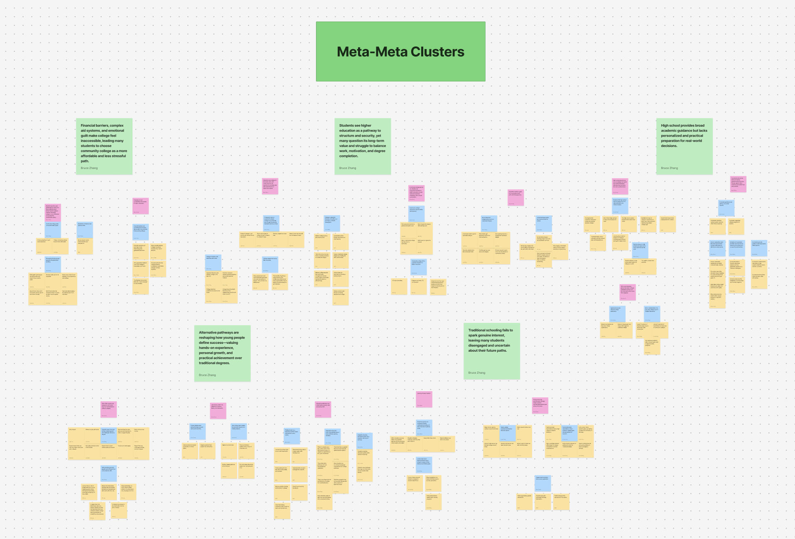
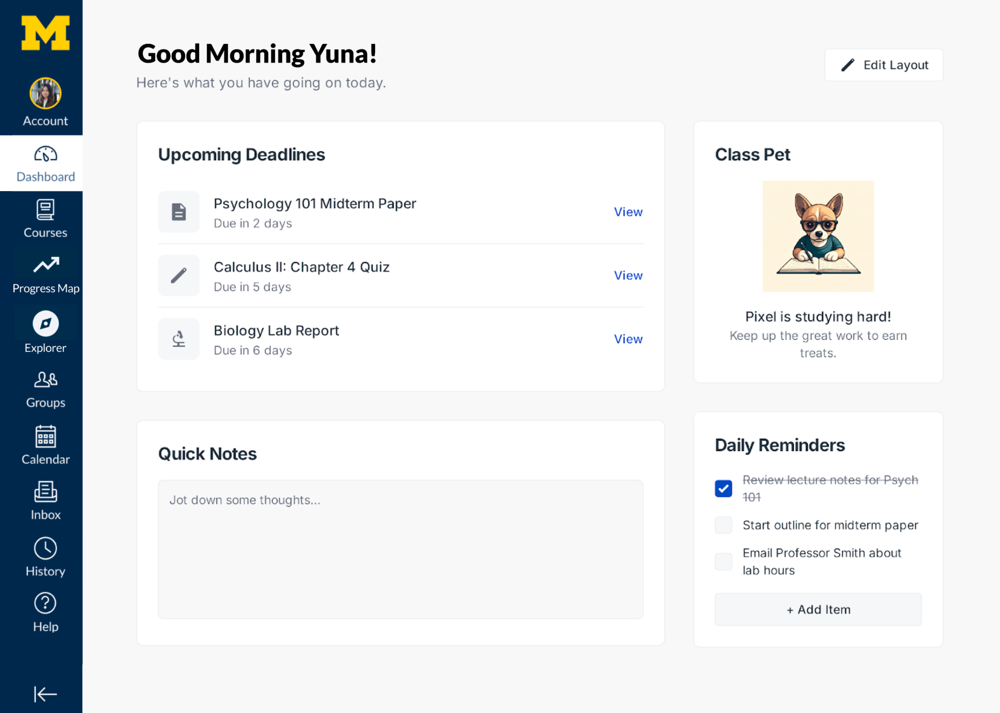
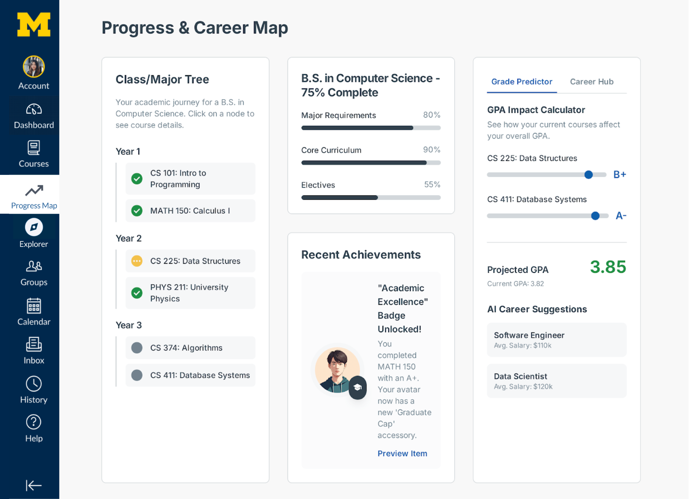
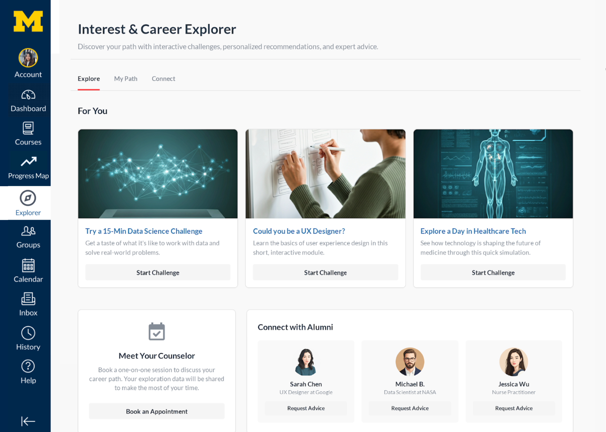
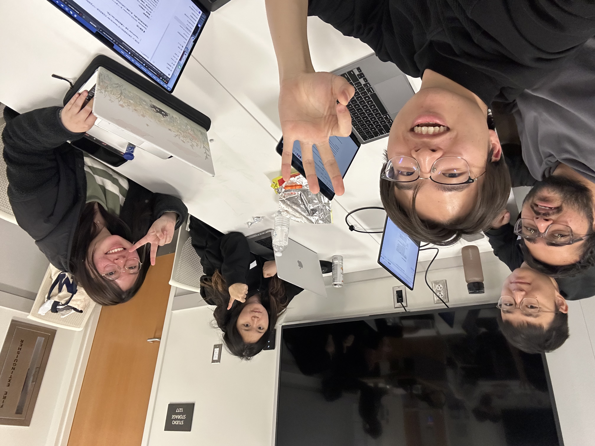

Canvas × Instructure
大学入学率在下降，但原因不只是学费。我们和 Instructure（Canvas LMS 的开发商）合作，通过用户研究发现了一个被忽视的根本原因：学生对传统课堂内容本身失去了兴趣——然后基于这个洞察，为 Canvas 提出了三个产品方向建议。
团队项目 · 与 Julie Zhou、Bill Long、Yuna Lee、Mufaddal Miyajiwala 协作完成
问题背景
Instructure 是 Canvas LMS 的开发商。Canvas 在北美高校 LMS 市场占有率超过 30%，覆盖全球数千所院校——它是绝大多数美国大学生日常使用的学习平台。SI 500 课程与 Instructure 合作，让学生团队对教育领域的真实问题做实地调研。我们团队的出发点是：美国大学入学率持续下降，背后的原因是什么？Canvas 可以做些什么？
最初的假设是经济原因——学费在过去 15 年涨了 37%，59% 的毕业生背负学生贷款。但这只是故事的一半。


研究过程
我们的研究分为两个阶段。先通过桌面调研建立量化基线——入学率趋势、学费涨幅、学生贷款数据。然后转向定性研究：访谈了四位选择了非传统路径的年轻人和一位高中升学顾问，还前往安娜堡当地的社区大学做了实地考察，观察实际的教学环境和学生状态。整个过程中与 Instructure 的 Chief Academic Officer 保持同步，确保研究方向和他们的产品战略对齐。
访谈中反复出现的不是"我付不起学费"，而是"课太无聊了"、"我不喜欢上学"、"我想要动手实践"。一位受访者高中毕业后上了一年社区大学就去做了调酒师——不是因为经济原因，而是工作比学校有趣得多。升学顾问也指出，学生缺乏兴趣正在成为比经济压力更强的决定因素。
数据分析与关键转向
我们用归纳法构建了四层 Affinity Wall：原始引述 → 主题聚类 → Meta Clusters → Meta-Meta Clusters。整理出五个根本原因，最核心的两个是：传统教育无法激发真正的兴趣，导致学生缺乏继续深造的动力；以及高中阶段提供的学业指导缺乏个性化和实践性。
这让我们做了一个关键转向：从"如何让学生付得起学费"变成了"如何让学习本身变得更有吸引力"——而这正好是 Canvas 作为学习平台可以直接影响的。



给 Canvas 的三个方向建议
基于研究发现，我们向 Instructure 提出了三个产品方向——都围绕同一个目标：让 Canvas 从一个"机构管理系统"变成一个"学生愿意打开的学习空间"。



反思
这个项目最大的收获是学到了"转向"的能力。最初的假设（经济障碍）在数据面前被推翻了，团队需要快速调整方向。这种从数据出发、让证据引导设计决策的思维方式，后来在我做交互设计和用户测试时被反复用到。
另一个收获是学会了在真实商业语境中做研究——Instructure 不是一个抽象的甲方，他们有具体的产品、具体的用户、具体的商业约束。在这个框架下做研究和在课堂上做研究，要求的精确度完全不同。

我做了什么
五人团队项目，所有工作协作完成。我重点参与了访谈协议设计与执行（包括与 Instructure Chief Academic Officer 的一对一访谈）、Affinity Wall 的归纳分析（尤其是从 Meta Clusters 到根本原因的提炼过程）、以及最终建议的信息架构和呈现。